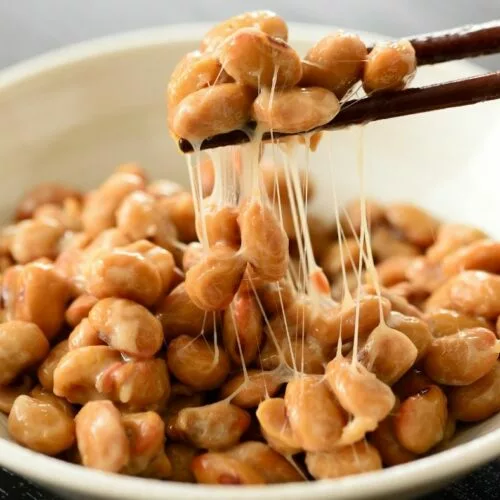

Natto w/ Ume Garlic Recipe

- Buy top quality natto from the asian/international market.
- Bust that baby open.
- Peel the top of the natto package off. After it's fully peeled off, press the top of the package onto the bottom portion and pull the small sheet out of the package. This will prevent you from losing any precious natto beans.
- Empty the soy sauce and mustard packets into the natto. Add extra if you'd like.
- Get an organic, free-roam egg and separate the yolk from the egg whites.
- Put the egg yolk in the natto.
- Mix it nice and good.
- Get a fresh bowl of rice out (whatever kind of rice you want).
- Get some ume garlic and put about 5 pieces of garlic in the rice bowl.
- Empty your natto into the rice bowl and mix it all up until the natto and nice and foamy.
- Enjoy the crap outta that bowl!
Back to home page.